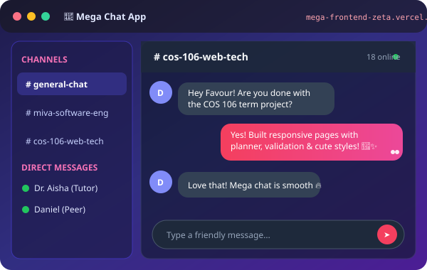

Real-Time MessagingMega — Real-Time Chat Application
A responsive, real-time messaging web platform engineered for group discussions and peer study communities. Features instant message broadcast, channel categorization, online presence tracking, and an accessible interface.